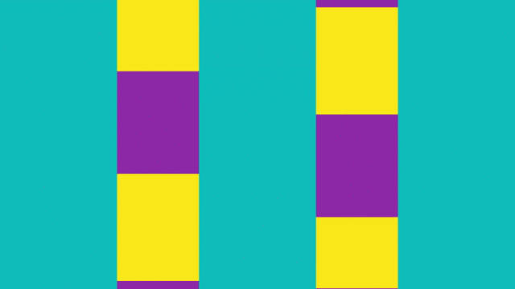
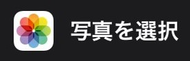
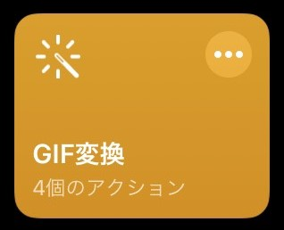
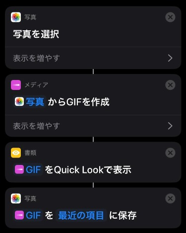
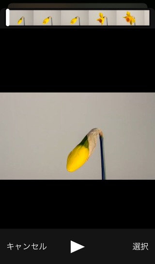
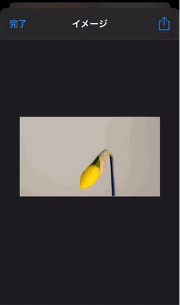
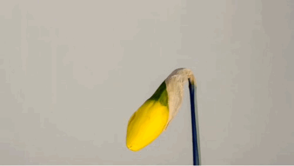

3 Oct 2020
iPhoneで動画をGIFに変換

目次
・はじめに
・ショートカットの作成
・実行
はじめに
GIF動画とは画像をコマ割りして連続再生した「動く静止画像」である。この記事ではiPhoneの「ショートカット」アプリを利用して動画をGIFに変換する方法を紹介する。
ショートカットの作成
1. 「ショートカット」アプリを起動する
2. 「ショートカットを作成」をタップ

3. 「アクションを追加」をタップ

4. 検索欄で「写真」と検索し、「写真を選択」を選択するとアクションが追加される

5. 「＋」ボタンをタップし、検索欄で「GIF」と検索し、「GIFを作成」を選択
6. 「＋」ボタンをタップし、検索欄で「クイックルック」と検索し、「クイックルック」を選択
作成されたGIFを確認
6. 「＋」ボタンをタップし、検索欄で「保存」と検索し、「写真アルバムに保存」を選択
「写真」アプリの「最近の項目」に保存される
7. 「次へ」をタップし、ショートカット名をつけたら完成

全体の流れ

実行
1. GIFに変換したい動画を準備する
※GIFの再生速度を作成したショートカットでは調整できないので、動画の準備段階で動画編集アプリ（iMovie等）を使用して再生速度を調整する。
2. 「ショートカット」アプリに戻り、作成したショートカットを起動
3. 準備した動画を選択するとGIFが作成される

4. 「クイックルック」に作成されたGIFのイメージが表示される

5. 「完了」をタップすると、「写真」アプリにGIFが保存される
作成されたGIF

Author
Tetsushi Miwa
名古屋工業大学大学院修士1年の三輪哲士です。大学院では社会工学系の専攻に所属しており、経営工学にまつわる勉強をしています。現在の研究テーマは「視覚障害者用の学習アプリケーションの開発について」です。Objective-Cを利用してiOSアプリケーションの開発に取り組んでいます。